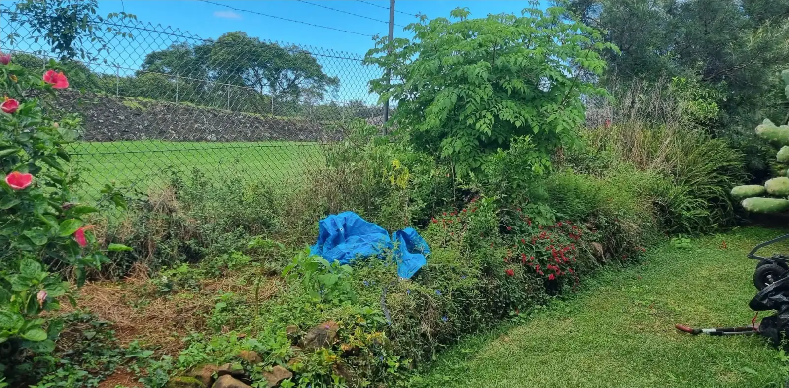
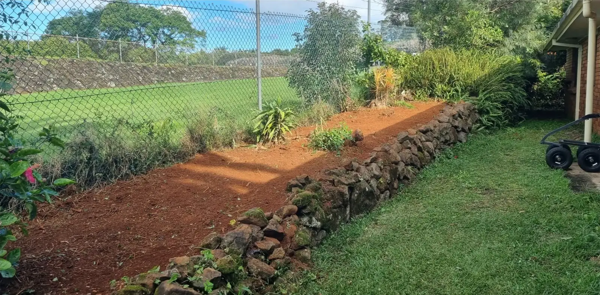
Fence-line garden bed. Weeds and overgrowth cleared, and the bed opened back up to its rock wall.
Design preview for T&S Garden Restoration, prepared by Dusk. Not the live website.Design preview by Dusk. Not the live site.
Alstonville · Lismore · Casino · Kyogle
Garden clean-ups, restoration and regular maintenance from a small family business based in Alstonville.
“A breath of fresh air in the garden maintenance business.” Google review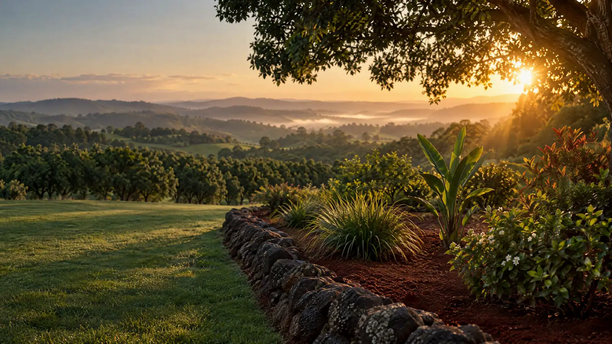
What restoration looks like
Illustration made for this preview, not a T&S job. Their real before & afters are next.
Before & after
Real jobs from their own Facebook page. Scroll, or drag the line, to clear the bed.


Fence-line garden bed. Weeds and overgrowth cleared, and the bed opened back up to its rock wall.
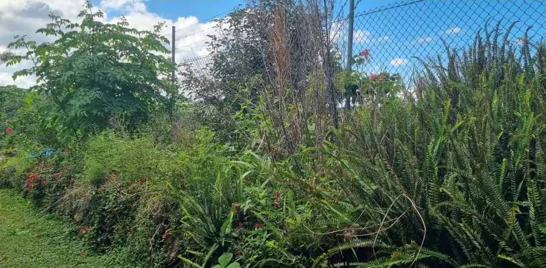
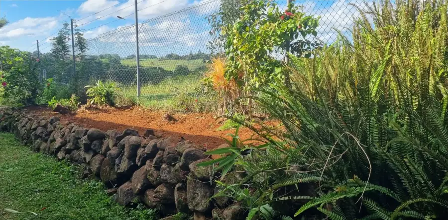
“Nice quick clean up a beautiful fresh start”
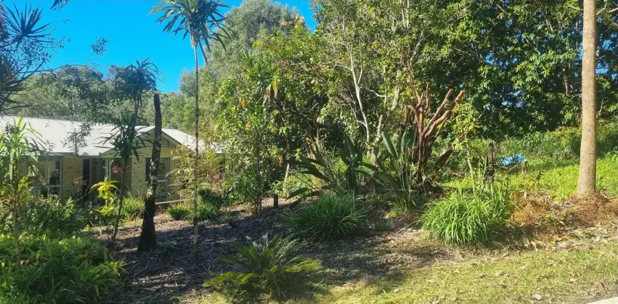
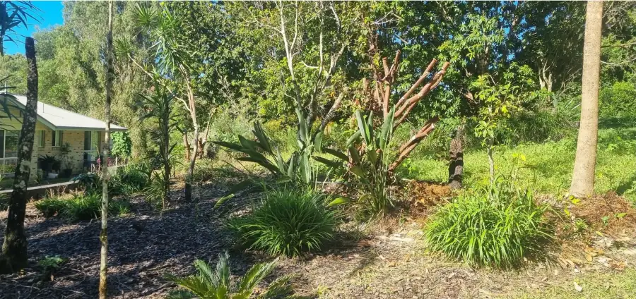
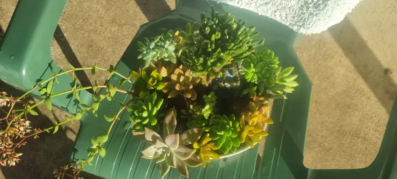
More from their June 2025 Facebook post: “Been a while since some new pics so here we go”.
Services
From one big clean-up to regular visits that keep it that way. Not sure what your garden needs? Send them a photo.
Text a photo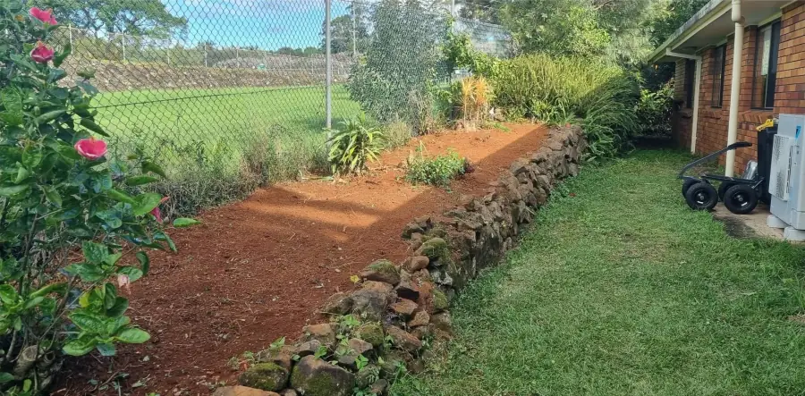
Gardens that have got away from you, cut back, weeded and brought back to clean, open beds.
One-off clean-ups for overgrown yards, with the green waste removed by the trailer load.
Regular visits to keep a garden tidy once it is back in shape.
Lawns kept neat alongside the garden, so the whole yard is looked after.
Gardens and grounds at workplaces, looked after around the way your business runs.
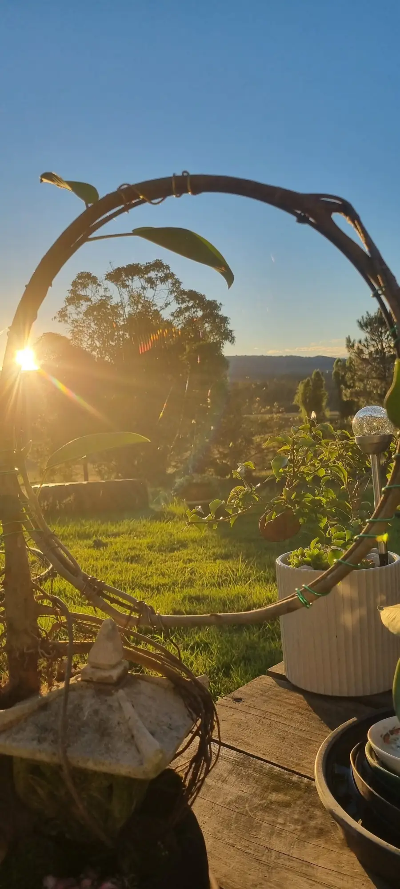
About
T&S Garden Restoration is a small family business based in Alstonville, run by Tammy and Simon. They take on the gardens that have got away from people, the overgrown beds, weeds and tired lawns, and bring them back to something you can enjoy again.
They work across the plateau and out to Lismore, Casino and Kyogle, for homes and for workplaces.
“Before and after clean ups I love my job”
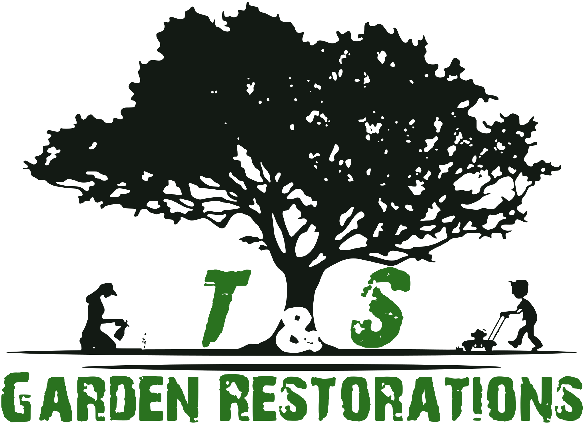
Reviews
“Tammy and Simon are a breath of fresh air in the garden maintenance business.”
“They are very helpful, knowledgeable and proactive and they go above and beyond in looking after the garden at our workplace.”
“I would highly recommend them if you are looking for quality lawn or garden maintenance from people who really care about the work they do.”
Helen R. J., Google review · Read it on Google
Hours & area
| Monday | 9 am to 4 pm |
|---|---|
| Tuesday | 9 am to 4 pm |
| Wednesday | 9 am to 4 pm |
| Thursday | 9 am to 4 pm |
| Friday | 9 am to 4 pm |
| Saturday | Closed |
| Sunday | Closed |
Based in Alstonville NSW 2477, working across Alstonville, Lismore, Casino and Kyogle.
Hours from their Google listing. Map is a sketch, not to exact scale.